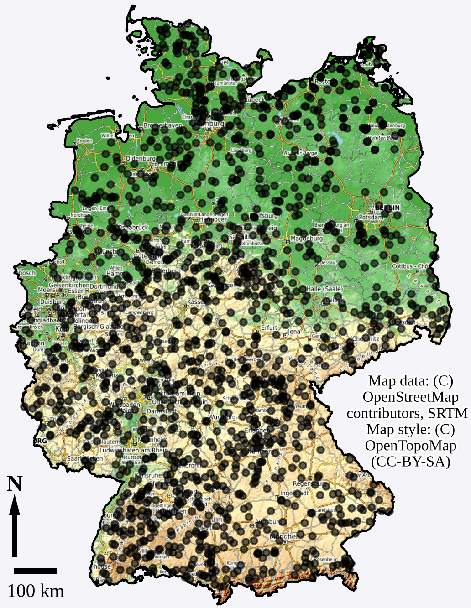

CAMELS-DE Processing Pipeline
CAMELS-DE
CAMELS-DE (Catchment Attributes and Meteorology for Large-sample Studies) is a hydro-meteorological dataset which offers data for 1555 catchments in Germany.
The time series data of hydro-meteorological variables is in daily resolution and spans up to 70 years, from January 1951 to December 2020. Additionally, the dataset includes a set of derived catchment attributes,
such as soil properties, land cover, and topographic data as well as time series data of simulated discharge from a regional Long-Short Term Memory (LSTM) network and a conceptual hydrological model.
The catchment boundaries are also provided in the dataset, which allows for the derivation of further catchment attributes.
Download CAMELS-DE:
https://doi.org/10.5281/zenodo.12760336

Processing Pipeline
Description
The processing pipeline of CAMELS-DE is built in a modular way where each component is implemented in a seperate GitHub repository that builds its own Docker container.
Each repository includes detailed documentation, guidelines for building and running the Docker containers, and instructions for accessing the required input data.
We want to make the origin as well as used methodologies / packages / functions of each data component of CAMELS-DE as traceable, comprehensible and reproducible as possible.
We think that this is best achieved through the modular containerized design instead of one monolithic code repository to generate CAMELS-DE.
In addition, this design simplifies possible future updates of individual components and the integration of new data sources.
Pipeline Components
The figure below visualises the CAMELS-DE processing pipeline, the processing containers are clickable, with links leading to the respective GitHub repositories.
All repositories are released as version 1, which ensures that the code used for the generation of CAMELS-DE can be referred to in a stable manner.
The final CAMELS-DE tile brings you to the published CAMELS-DE data set: